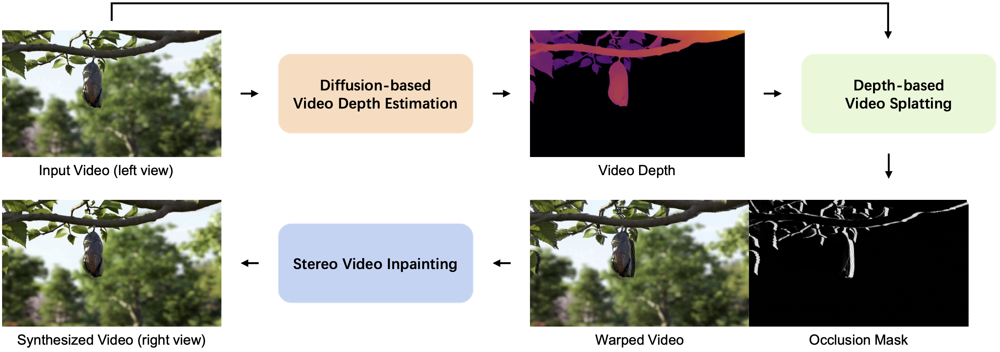

Brief Introduction

We present a novel framework for converting 2D videos to immersive stereoscopic 3D, addressing the growing demand for 3D content in immersive experience. Leveraging foundation models as priors, our approach overcomes the limitations of traditional methods and boosts the performance in both video depth estimation and video inpainting to ensure the high-quality generation required by the display devices. The proposed system consists of three main steps: video depth estimation using a diffusion method, video splatting for warping and extracting occlusion mask, and stereo video inpainting. We utilize pre-trained stable video diffusion as the backbone and introduce a fine-tuning protocol for the stereo video inpainting task. To handle input video with varying lengths and resolutions, we explore auto-regressive strategies and tiled processing. A data processing pipeline is developed to reconstruct a dataset for training. Our framework demonstrates significant improvements in 2D-to-3D video conversion, offering a practical solution for creating immersive content compatible with devices like Apple Vision Pro and 3D displays. This work contributes to the field by presenting an effective method for generating high-quality stereoscopic videos from monocular input, potentially transforming how we experience digital media.
Overall Framework of StereoCrafter
Our method contains three main stages. In the first stage, the video depth is estimated from the monocular video. Then, We can obtain the warped video and its occlusion mask through depth-aware forward splatting with the left video and the video depth as input. Finally, we train a stereo video inpainting model to fill in the hole region of the warped video according to the occlusion mask to synthesize right video.
More Demo: Free View Rendering from Monocular Video
More Demo: Watching the Generated Stereo Videos in Vision Pro
Citations
BibTex Code Here
This page was built using the modification version of Academic Project Page Template from vinthony.
You are free to borrow the of this website, we just ask that you link back to this page in the footer.
This website is licensed under a Creative
Commons Attribution-ShareAlike 4.0 International License.